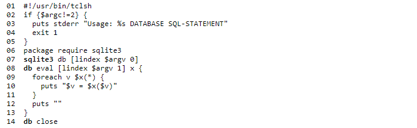
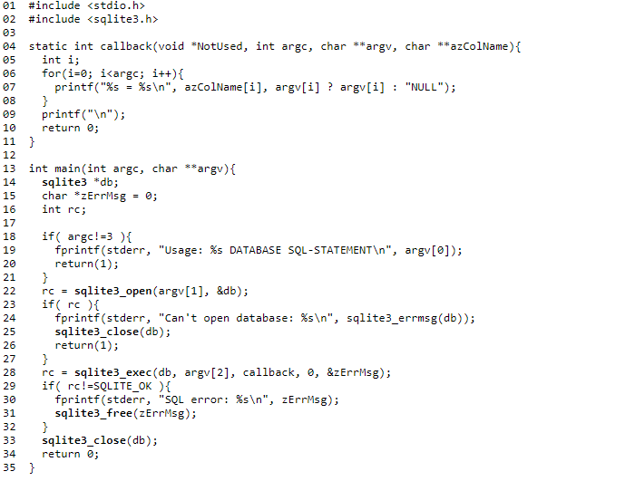

Получите копию предварительно скомпилированных двоичных файлов для своей машины или получите копию исходных текстов и скомпилируйте их самостоятельно. Посетите страницу загрузки для получения дополнительной информации
Ниже приведена простая программа TCL, которая демонстрирует, как использовать интерфейс TCL для SQLite. Программа выполняет операторы SQL, заданные в качестве второго аргумента в базе данных, определенной первым аргументом. Команды, за которыми следует следить, - это команда sqlite3 в строке 7, которая открывает базу данных SQLite и создает новый объект с именем «db» для доступа к этой базе данных, использование метода eval для объекта db в строке 8 для запуска команд SQL для база данных и закрытие соединения с базой данных в последней строке скрипта.
Ниже приведена простая программа на C, которая демонстрирует, как использовать интерфейс C/C++ для SQLite. Имя базы данных задается первым аргументом, а второй аргумент - это один или несколько операторов SQL, выполняемых в отношении базы данных. Функции, на которые следует обратить внимание, - это вызов sqlite3_open () в строке 22, который открывает базу данных, sqlite3_exec () в строке 28, который выполняет команды SQL для базы данных, и sqlite3_close () в строке 33, закрывающий соединение с базой данных.
См. Также Введение в интерфейс SQLite C/C ++ для вводного обзора и дорожной карты для десятков функций интерфейса SQLite.
См. Документ «Как компилировать SQLite» для получения инструкций и советов о том, как скомпилировать программу, показанную выше.